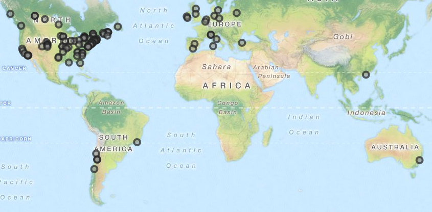
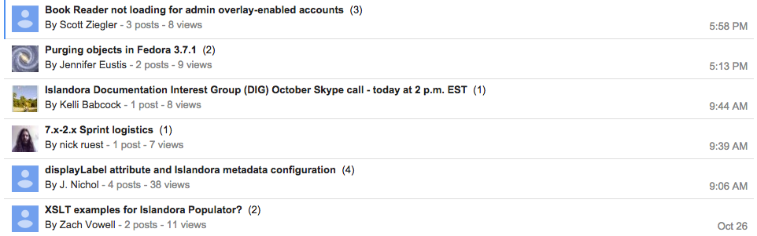
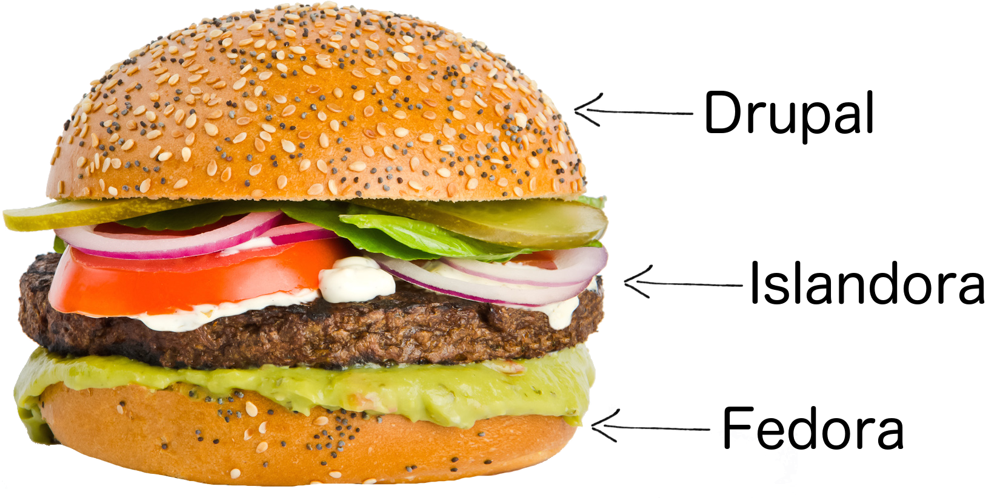
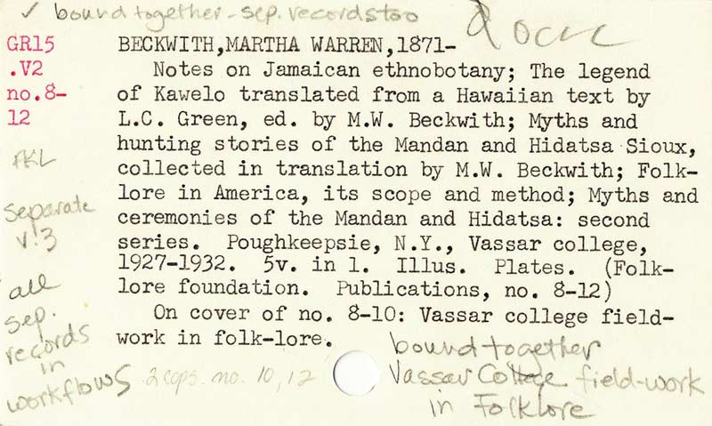

Introduction to
Islandora
Sara Allain | CC0
This presentation: is.gd/sallain
Code: https://github.com/sallain/intro-to-islandora
Use the spacebar to advance through slides.
Definition
Islandora is an open-source software framework designed to help institutions and organizations and their audiences collaboratively manage and discover digital assets using a best-practices framework.
- About IslandoraOpen Source
Islandora is Open Source
Anybody with the knowledge, skill, and/or time can contribute to the code, making it better for everyone.
The non-profit Islandora Foundation oversees its maintenance and development and takes the lead in organizing the community.
- About Islandora
Islandora is Open Source
Open source means that we get to control, at a local level, how we use the software.
We control the data, the updating, the functionality, and the amount of time and resources that we put into the software.
Islandora is a Community
There are a hundreds of installs all over the world where people are working on the software, making it better, and helping each other out.
Islandora is a Community
Extensive documentation, an active Google Group and IRC channel, and expert colleagues around the world can help us work through problems and come up with creative solutions.
Software Framework
Islandora is a Sandwich
It's a bundle of smaller things squished together between two giant open source platforms - Drupal (display) and Fedora (storage).
Islandora is a Sandwich
Drupal is the website that the rest of the world sees. It's really good at letting us build things like websites, blogs, galleries, maps, exhibits, and timelines to display the things we store in Fedora.

Islandora is a Sandwich
Fedora is where we store all the stuff. It's really good at keeping everything safe and secure.
Islandora is a Sandwich
Islandora brings Fedora and Drupal together. It adds a ton of important functionality through its solution packs and modules.

Sandwich Fillings
Islandora has solution packs for storing and presenting common types of data.
Audio ·
Basic Collection ·
Basic Image ·
Book ·
Compound Object ·
Large Image ·
Newspaper
Paged Content ·
PDF ·
Video ·
Web Archive
Islandora Scholar ·
Entities ·
Disk Image
Sandwich Fillings
Islandora also has utility modules that let us perform various actions on that data and/or the attached metadata.
Batch ingests ·
Alternative content displays
Preservation (Checksum, FITS, BagIt, PREMIS, etc.)
Image annotation ·
Optical character recognition
And many more!
Digital Assets
Objects
Every piece of content in Islandora is an object. Objects can be containers for other objects.
Metadata
Metadata is information about the object. This can be descriptive, technical, or refer to relationships that the object has with other objects in the repository.
Through their metadata, objects relate to each other in a number of ways. Relationships can be hierarchical or flat, and an object can have many relationships.
Searching
A discovery layer that provides robust searching and indexing using Lucene, Solr, and GSearch.
Credits
Citations
- Nick Ruest & Kirsta Stapelfeldt, Introduction to Islandora
- The Islandora and Discovery Garden websites, blogs, documentation, and Github repositories
- Many, many other presentations that I've seen over the years on Islandora
License
This presentation is licensed CC BY-SA meaning that it can be copied, redistributed, remixed, transformed, and built upon for any purpose as long as proper attribution is given.